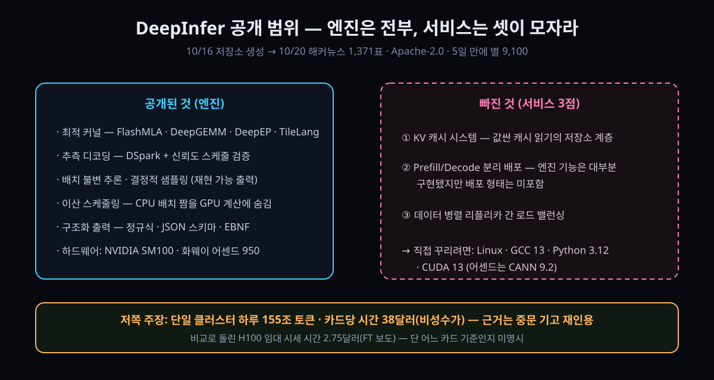

10/20 해커뉴스 1,371표 — 딥시크가 자기 서빙 엔진 '딥인퍼'를 공개했다 — API를 통째 복제하려면 아직 빠진 3가지

결론부터. 세계에서 가장 싼 AI API의 뒤를 받치던 기계실이 문을 열었다. 그런데 방 전체가 아니라 발전실만 보여줬다. 커널·스케줄러·모델 런타임은 나왔고, 그 위에 얹히던 서비스 계층 3점은 사내에 남았다.
10월 20일(현지) 딥시크가 자체 추론 프레임워크 '딥인퍼'를 GitHub에 Apache 2.0 라이선스로 공개했다. 열흘 전 만든 저장소가 닷새 만에 별 9,100을 넘겼고(10-21 0시 실측 9,152), 같은 날 해커뉴스 공식 발표 글이 표 1,371·댓글 477로 1일에 올랐다.
값싼 입력·출력 가격표만 보고 "어차피 남의 데이터센터 사정이겠지" 했던 쪽에는 뼈아픈 공개다. 가격의 절반이 소프트웨어에서 나오는지 하드웨어에서 나오는지가, 이제 남의 사정이 아니라 내 서버에서 재현 가능한 질문이 됐다.
30초 요약
| 항목 | 내용 |
|---|---|
| 무슨 일 | 딥시크가 자사 대형 서빙 서비스 전용이던 추론 프레임워크 딥인퍼를 공개. 지원 모델은 V4.1-Flash 하나, 라이선스 Apache 2.0, 언어 Python |
| 공개 범위 | 커널(FlashMLA·DeepGEMM·DeepEP·TileLang 계열), 추측 디코딩, 배치 스케줄링, 구조화 출력까지 엔진 계층 전부 |
| 빠진 것 | KV 캐시 시스템, 프리필·디코드(PD) 분리 배포, 프리필·디코드 양쪽의 데이터 병렬 리플리카 간 로드 밸런싱 — 저장소 스스로 '완전한 서빙에 필요하나 이번 릴리스에 없는 것'으로 열거 |
| 지원 하드웨어 | NVIDIA SM100급 GPU, 화웨이 어센드 950 NPU. 요구 환경은 Linux · GCC 13 이상 · Python 3.12 · CUDA 13(어센드는 CANN 9.2) |
| 반응 | 해커뉴스 1,371표·477댓글. 논점 3종 — "왜 열어주나", "냄비는 저을 수 있는데 요리는 못 한다", "SM100도 어센드도 없는 우리는 뭐 하나" |
| 검증할 것 | 배치 불변 추론(환경변수 하나)과 결정적 샘플링 — 동일 입력·동일 시드에서 배치 구성과 무관하게 비트 단위 같은 출력이 나온다면 재현성 테스트의 기준선이 바뀐다 |
1. 무엇이 터졌나
저장소 생성 시점은 10월 16일. 이틀 뒤 V4.1-Flash 가격표가 세간의 화제가 됐고(아래 같이 읽기의 10/18 잔), 10월 20일 "방금 오픈소스화된 딥인퍼, 우리 사내 추론 프레임워크"라는 글이 해커뉴스 1면에 걸렸다. 논문도 데모도 아니라, 자기들 API에 트래픽을 흘려보내고 있는 실제 코드라는 점이 지난주 가격표 논쟁과 결이 다르다.
안쪽 계보도 솔직하다. 감사의 말미에 '주로 vLLM 위에 처음부터 지었고 SGLang과 TensorRT-LLM에서 추가 영감을 받았다'가 그대로 남아 있다. 공개 서빙 3강이라 불리던 흐름 중 둘의 피를 받은 셋째가, 이제 세 번째로 공개 선반에 올라온 셈이다.
지원 범위는 좁다. 먼저 눈에 걸리는 대목이다. 모델은 V4.1-Flash 단일, 하드웨어는 SM100(블랙웰급)과 어센드 950의 두 갈래. Python 3.12 전용 가상환경에 GCC 13 이상, NVIDIA 쪽은 CUDA 13까지 요구된다. 지난주 "1017 체크포인트를 MIT로 깔아보자" 붐과 달리, 이번 것은 '깔리는 대상'(모델)이 아니라 '깔리는 곳'(하드웨어)에서 걸러진다.
2. 왜 대단한가
① 가격표의 절반이 소프트웨어임을 스스로 입증한 공개다
10월 17일 밤 V4.1-Flash가 뒤집어놓은 기준선 — 캐시 읽은 값의 4분의 1 수준 — 뒤에는 '그럴 만한 하드웨어'가 아니라 '그럴 수밖에 없는 소프트웨어'가 있다는 해석이 많았다. 엔진 자체가 나오자 그 해석이 실험 가능한 질문으로 바뀌었다. 같은 체크포인트를 공개된 커널과 스케줄러로 돌려보고, 자사 가격표와 견적을 맞대볼 수 있게 된 것이다.
② '재현 가능한 LLM 출력'의 상용 구현이 환경변수 두 개로 열려 있다
LLM 서빙에서 출력 재현성은 사실상 포기된 덕목이었다. 같은 입력이어도 배치 구성(남들과 한 배에 타는지)에 따라 행렬 곱의 합산 순서가 바뀌고, 반올림 오차가 갈라지고, 거기다 샘플링까지 얹히면 같은 시드도 남의 것이 된다. 딥인퍼는 이걸 두 기능으로 정면 돌파했다고 밝힌다. 배치 불변 추론(환경변수 DEEPINFER_BATCH_INVARIANT=1, NVIDIA 전용)으로 배치 구성과 무관하게 동일한 결과를, 여기에 MTP 가변길이 경로를 끄고(DEEPINFER_ENABLE_MTP_VARLEN=0) SamplingParams에 고정 seq_seed를 넣어 결정적 샘플링을 확보하는 조합이다. 테스트 스냅샷·회귀 감시·감사 추적이 필요한 팀이라면 벤치마크 점수보다 이 한 줄이 더 반갑다.
③ 디코딩 쪽 잔기술들이 '논문'이 아니라 '운영값'으로 나왔다
추측 디코딩은 초안 토큰(DSpark)에 신뢰도 추정까지 얹어 검증 스케줄을 짠다. 기본 초안 길이는 5. 디코더의 슬라이딩 윈도우 attention 쪽은 '프리필을 다시 시키지 말고 유한한 접미사만 다시 재생'하는 방식인데, V4.1 기본 유지 접미사는 140토큰으로 박혀 있다(SWA 창 + 최대 역추적 길이를 덮어야 한다는 조건부). CPU의 배치 스케줄링을 GPU 계산과 겹치는 이산 스케줄링은 기본값이 켜진 상태. 하나하나가 특정 모델 하나에 맞춰 값이 튜닝된 '운영 중이던 설정'이라는 점이 일반 라이브러리와 결이 다른 부분이다.
④ 어센드 950 겸용 — 하드웨어 단일화를 거부하는 두 번째 레일
공개된 요구 사항에 NVIDIA와 화웨이 NPU가 나란히 있다. 커스텀 빌드 한 번으로 DEEPINFER_ACCELERATOR=ascend를 고르면 어센드 계열이 같은 엔진 위에 올라간다. AI 하드웨어를 다루는 논평가 한 명이 "어센드 지원 — 딥시크다운 순간"이라고 남겼는데, 서두의 정치적 해석까지 차치하면 미국 제재 국면에서 서방 라이브러리(vLLM 계보)와 중국 가속기가 한 저장소를 공유한다는 사실 자체가 뉴스다.
⑤ 성능·수익 쪽 주장은 아직 '저쪽 말' 단계다
댓글창에서 가장 많이 돈 문장은 저쪽 중문 기고를 옮긴 것이다: 이 프레임워크로 단일 클러스터 처리량이 하루 155조 토큰, 카드당 시간 수익은 비성수 기준 38달러. 해커뉴스 이용자들이 FT 보도의 H100 임대 시세(시간당 약 2.75달러)를 견주며 "38달러가 무슨 카드 기준인지 명시되지 않았다"고 지적한 상태다. 성능 그래프 두 장(프리필 4장·디코드 64장의 SM100, 각각 스케일업 도메인 내부)은 저장소에 있지만 독립 검증은 없다.
3. 바로 써먹기 — 설치 → 동작 확인 → 한계
실습은 늘 하던 대로 설치 → 확인 → 한계 3단계다. 다만 이번 도구는 1단계에서 사람이 걸러지므로, 표부터 보기를 권한다.
1단계, 설치. 빈 Python 3.12 환경을 만들고 가속기를 지정한 뒤 빌드 스크립트를 돌리는 두 줄이다.
export DEEPINFER_ACCELERATOR=nvidia # 어센드는 ascend
./build.sh
# 실행 예시 (저장소 examples/README.md 기준):
python examples/offline_inference.py
# 체크포인트는 첫 실행에 Hugging Face 캐시로 내려받고,
# DEEPINFER_HF_MODEL_DIR로 로컬 사본 지정 가능
기본 체크포인트가 V4.1-Flash의 1017 스냅샷으로 박혀 있다 — 지난주에 화제가 됐던 그 가중치 그 자체다. 오프라인 추론(질문 넣고 결과 받는 배치 실행) 예시까지가 공개 범위이고, 상시 서버 형태 배포 튜토리얼은 아직 없다.
2단계, 무엇부터 확인하나. 점수표가 아니라 저장소 스스로 특징으로 세운 항목들을 직접 켜보는 순서로.
| 확인 항목 | 켜는 법 | 기대 동작 |
|---|---|---|
| 결정적 샘플링 | DEEPINFER_BATCH_INVARIANT=1 DEEPINFER_ENABLE_MTP_VARLEN=0 + 고정 seq_seed | 같은 입력·같은 시드를 단독 배치가 아니라 다른 배치에 섞어 돌려도 출력이 문자 단위로 일치 |
| 구조화 출력 | SamplingParams에 so_args(정규식·JSON 스키마·EBNF 중 택1) | 생성이 스키마를 벗어나지 않음 — 도구 호출 파이프라인의 재시도 루프가 줄어드는 지점 |
| 신뢰도 기반 디코딩 | DEEPINFER_ENABLE_MTP_VARLEN=1, 초안 상한은 DEEPINFER_USE_NEXTN_DECODE(기본 5) | 토큰마다 초안을 검증 없이 확정한 뒤 나중에 접는 방식 — 체감 생성 속도가 오르는지 초당 토큰 곡선으로 확인 |
| 프리필 절삭 | DEEPINFER_YOCO_PREFILL_TRUNCATION_MODE=compact · KEEP_TOKENS=140(V4.1 기본) | 디코더 쪽 재프리필 계산량이 접미사 분량으로 줄어드는지 — 창 크기보다 짧은 대화에서부터 이득이 사라진다 |
3단계, 한계표 — 이 글의 진짜 결론.
| 걸림목 | 실전 의미 |
|---|---|
| 하드웨어가 SM100·어센드 950뿐 | 3090·4090·A100·H100은 이번 릴리스 목록에 없다. '우리 3090으로 딥시크 API를 따라잡자'는 논리는 아직 다른 엔진(llama.cpp·vLLM·SGLang)의 몫 |
| 서비스 3점 미포함 | KV 캐시 계층·PD 분리·리플리카 균형이 없어, 예제 수준 실행은 되어도 'API 복제'는 스스로 지어야 한다. 저장소도 '필요한 엔진 기능은 대부분 구현됐다'며 선을 그었다 |
| 모델 1종 전용 | V4.1-Flash 외 모델에 얹는 경로(포트 가이드·추상화)는 문서화되지 않았다. 특정 모델에 맞춘 커널이라는 뜻이자, 그 모델이 아니라면 얻을 이득이 얇다는 뜻 |
| 요구 환경이 최신·특수 | Linux 전용에 GCC 13·CUDA 13·Python 3.12. 기존 3.11 배포판·CUDA 12 클러스터에 그대로 끼울 수 있다고 보면 안 된다 |
4. 해외 반응 쟁점
① 왜 열어주나 — "기술 봉쇄"론과 "데이터가 목적"론
최대 논점은 공개 동기였다. 한 축은 '미국 프런티어 랩들에 대한 전략적 사보타주'라는 읽기다 — 남의 성과물을 공짜로 깔아두면 1조 달러 밸류에이션으로 가는 길이 좁아진다는 것. 다른 축은 더 실용적이다: 생태계 중립화 효과는 인정하되 진짜 이유는 모델이 아니라 데이터라는 것 — 자기 엔진으로 서빙하는 쪽이 로그·트래픽에서 남는다. "좋은 일을 하는 데 이유가 있나"와 "이유가 있을 수밖에 없다"가 댓글창에서 정면으로 부딪혔다.
② "냄비는 저을 수 있다, 요리는 못 한다"
가장 많이 공감 축에 오른 회의론이다. 경쟁자를 자극하기엔 충분하지만, 보유 카드에 찔러 넣고 자기 서비스를 띄우는 수준은 아니라는 것. 빠진 3점(KV 캐시·PD 분리·부하 분산)이 그 차이를 그대로 기술한다. "캐시 시스템이 눈에 띄게 없다"는 지적이 같은 창에 겹쳤다.
③ vLLM·SGLang과 비교는 언제 나오나
감사에서 두 프로젝트를 공인한 터라, "기존 엔진 대비 이득이 몇 퍼센트냐"가 다음 질문으로 몰렸다. 답은 아직 없다 — 그래프 축이 절대 성능이지 상대 비교가 아니라서다. 벤치 재현 스크립트(run_sweep.sh)가 그 질문의 첫 답이 될 가능성은 있다.
④ 가격표의 원천이 여기냐는 추적
캐시 입력의 1000토큰당 1센트 이하 가격을 가능하게 한 기계가 이 엔진이라는 연결고리가 댓글로 이어졌다. 저쪽 목표 중 하나가 "72시간 이상 KV 캐시 유지"로 번역되어 도는데, 캐시 계층이 공개에서 빠진 이유가 바로 그 72시간이라는 해석도 나온다.
⑤ 반동 — "이건 오픈소스가 아니라 오픈코어다"
엔진은 내고 서비스는 남기는 구조에 대한 불만이 조직적으로 나왔다. 다만 반론도 있다: 자기들이 지금 돈 버는 기계실을 줄 때 상대가 다시 팔 수 없다는 보장이 없다 — 남는 게 아니라 남의 것을 못 팔게 만드는 수라는 것. ①번 논쟁의 뒤쪽 문구다.
5. 마시기 전 주의
첫째, 하루 155조 토큰·카드당 38달러는 저쪽 중문 기고를 재인용한 값이고 기준 카드 기종이 명시되지 않았다 — 그대로 믿지 말 것. 둘째, 별 9,152는 10월 21일 0시(한국) 실측값이다. 셋째, 'SM100 지원'을 H100 지원으로 읽지 말 것 — 세대에서 한 칸 위 칩이 기준이고, 이 한 줄 때문에 설치 3시간이 증발할 수 있다. 넷째, 그래프는 스케일업 도메인 내부 수치라 여러 랙에 걸친 구성까지 같은 곡선이라는 보장은 없다. 다섯째, 지원 모델 1종·CUDA 13·Python 3.12 조건의 실측은 아직 우리 환경에서 하지 못했다 — 이 글의 실습 절차는 저장소 문서가 허락한 범위까지다.
글을 접는다. 이번 주는 딥시크 쪽이 가격표(17일)와 기계실(20일)을 이틀 간격으로 열어젖힌 한 주였다. 엔진이 공개됐다고 자기 API까지 공개된 건 아니지만, "싼 지능은 하드웨어 싸움"이라는 문장이 이번 주 안에 기각될지 여부는 이제 우리 손에 달려 있다.
바로 가기
같이 읽기
"10월 17일 밤 뒤집힌 가격표 — 입력 89원·출력 555원에 100만 컨텍스트" — 이번 주의 앞 잔. 그 글이 '가격'이었다면 이건 '원가'다. 가격표가 이 엔진에서 나온다는 연결고리가 오늘 확인됐다.
SM100이 남의 나라 이야기가 아닌 사람을 위한 잔 — 우리 3090으로 125B를 굴린 실측기 — 공개 범위에 낄 수 없는 카드(3090·4090)로 지금 당장 할 수 있는 서빙이 뭔지를 다룬 10월의 잔.